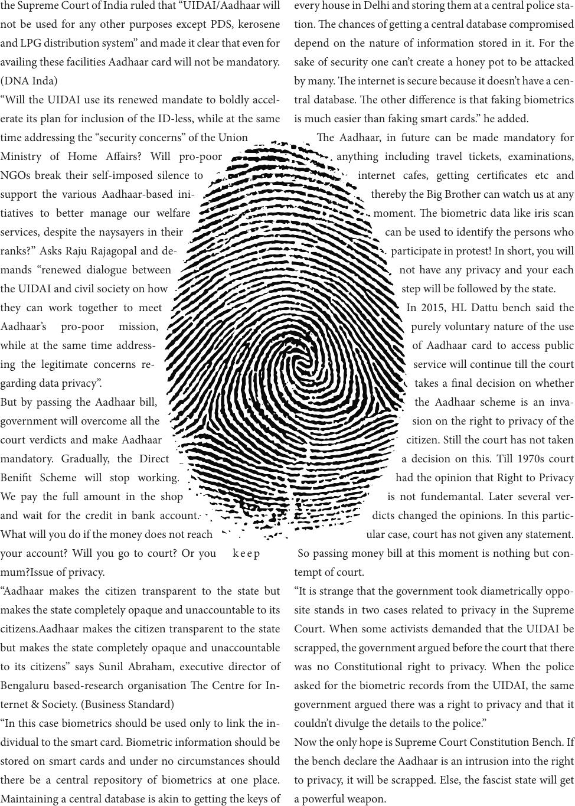

the Supreme Court of India ruled that “UIDAI/Aadhaar will
not be used for any other purposes except PDS, kerosene
and LPG distribution system” and made it clear that even for
availing these facilities Aadhaar card will not be mandatory.
(DNA Inda)
“Will the UIDAI use its renewed mandate to boldly accel-
erate its plan for inclusion of the ID-less, while at the same
time addressing the “security concerns” of the Union
Ministry of Home Aairs? Will pro-poor
NGOs break their self-imposed silence to
support the various Aadhaar-based ini-
tiatives to better manage our welfare
services, despite the naysayers in their
ranks?” Asks Raju Rajagopal and de-
mands “renewed dialogue between
the UIDAI and civil society on how
they can work together to meet
Aadhaar’s pro-poor mission,
while at the same time address-
ing the legitimate concerns re-
garding data privacy”.
But by passing the Aadhaar bill,
government will overcome all the
court verdicts and make Aadhaar
mandatory. Gradually, the Direct
Benit Scheme will stop working.
We pay the full amount in the shop
and wait for the credit in bank account.
What will you do if the money does not reach
your account? Will you go to court? Or you k e e p
mum?Issue of privacy.
“Aadhaar makes the citizen transparent to the state but
makes the state completely opaque and unaccountable to its
citizens.Aadhaar makes the citizen transparent to the state
but makes the state completely opaque and unaccountable
to its citizens” says Sunil Abraham, executive director of
Bengaluru based-research organisation e Centre for In-
ternet & Society. (Business Standard)
“In this case biometrics should be used only to link the in-
dividual to the smart card. Biometric information should be
stored on smart cards and under no circumstances should
there be a central repository of biometrics at one place.
Maintaining a central database is akin to getting the keys of
every house in Delhi and storing them at a central police sta-
tion. e chances of getting a central database compromised
depend on the nature of information stored in it. For the
sake of security one can’t create a honey pot to be attacked
by many. e internet is secure because it doesn’t have a cen-
tral database. e other dierence is that faking biometrics
is much easier than faking smart cards.” he added.
e Aadhaar, in future can be made mandatory for
anything including travel tickets, examinations,
internet cafes, getting certicates etc and
thereby the Big Brother can watch us at any
moment. e biometric data like iris scan
can be used to identify the persons who
participate in protest! In short, you will
not have any privacy and your each
step will be followed by the state.
In 2015, HL Dattu bench said the
purely voluntary nature of the use
of Aadhaar card to access public
service will continue till the court
takes a nal decision on whether
the Aadhaar scheme is an inva-
sion on the right to privacy of the
citizen. Still the court has not taken
a decision on this. Till 1970s court
had the opinion that Right to Privacy
is not fundemantal. Later several ver-
dicts changed the opinions. In this partic-
ular case, court has not given any statement.
So passing money bill at this moment is nothing but con-
tempt of court.
“It is strange that the government took diametrically oppo-
site stands in two cases related to privacy in the Supreme
Court. When some activists demanded that the UIDAI be
scrapped, the government argued before the court that there
was no Constitutional right to privacy. When the police
asked for the biometric records from the UIDAI, the same
government argued there was a right to privacy and that it
couldn’t divulge the details to the police.”
Now the only hope is Supreme Court Constitution Bench. If
the bench declare the Aadhaar is an intrusion into the right
to privacy, it will be scrapped. Else, the fascist state will get
a powerful weapon.